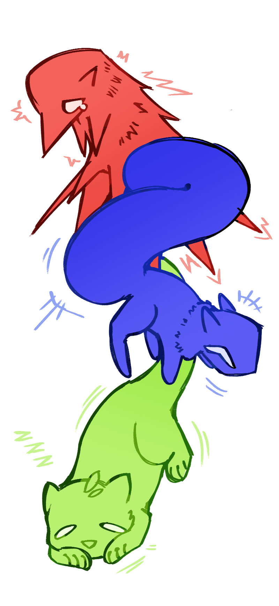

Gentle Compassion: to have the capacity to hold someone gently in your arms. to embrace someone who's still afraid of the feeling. to guide them to a better tommorow, where maybe the sun may shine again once more. to understand, to wait, to teach, and to listen. someone who holds this character trait also has a cute plant collection!

thank you for being so compassion with me, linda.
i've been thinking about the first time i had met you. i was so scared of you, in all honesty. i was afraid of your judgement: "what would this mysterious linda person think of me? what if she thinks i'm being overdramatic? oversensitive? overbearing?" though, of course, you never said any of these things.
maybe you could say that my red circle was overtaking my life at that point. i think it was. i couldn't understand it. any of it, really. the way my brain felt, and what it wanted: it was like there was someone else in my head, pulling switches and pressing buttons i had never known existed. so many embarassing and humiliating thoughts that wanted to be spilt out, but never were. until i talked to you.
your kindness, warmth, and love: i'll never forget it. the way you made me feel so safe and so understood during a time where none of those things felt possible at all. thank you for giving me so much grace for over the last almost four years, linda. i don't think i would have climbed out of that dark hole without your gentle light guiding me through it all. all of the terrifying things about the world and myself don't feel so terrifying anymore.
though, i would like to take this opportunity to also say this: when you can, i'd like you to also lend that grace to yourself! you work so hard and tirelessly, so i think it's only fair that you get to take breaks and care for yourself. you also deserve to be happy and healthy! you deserve the same grace and paitence you've given me for all these years too.
thank you so much for everything linda. my days are so much brighter because of you. happy thanksgiving!
love, stephen